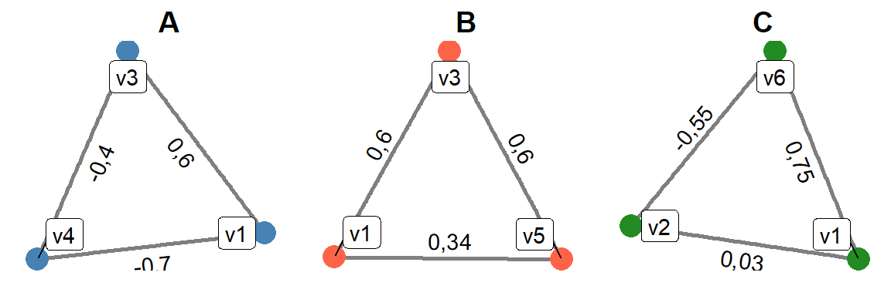

A változók közötti összefüggések sokszor bonyolultabbak, mintsem az egyszerű kétváltozós módszerek (kereszttábla, kétváltozós korreláció, t-próba, stb.) segítségével felfejthetők legyenek.
Két változó úgy is összefügghet, hogy valójában nincs, vagy nem olyan közvetlen összefüggés van köztük, mint amit az adott kétváltozós módszerrel ki tudunk mutatni. Az összefüggés (részben vagy egészben) eredhet abból is, ha két változó közös okra vezethető vissza, vagy ha ugyan van összefüggés két változó között, de azt egy harmadik változó közvetíti.
Ilyen esetekben előfordulhat, hogy egy harmadik változó hatásainak figyelmbe vétele alapvetően változtatja meg a két eredetileg vizsgált változó közötti kapcsolatot. Ez a lényege a Lazarsfeld-féle elaborációs modellnek, és ezt figyelhetjük meg a Simpson-paradoxon esetében.
A fentebb említett első eset (közös ok) kapcsán gondolhatnak például arra, mennyi minden függ össze statisztikailag kimutatható módon az iskolai végzettséggel: jövedelem, előítéletesség, vallásosság, különböző szabadidős foglalkozások végzése, kiadásaink szerkezete. Könnyen kimutatható összefüggés ezek között is, még akkor is, ha közvetlenül nem függnek össze.
Vagy gondoljanak Babbie példájára az általános iskolások lábméretével és matektudásával, vagy pedig egy faluban a gólyafészkek számával és a gyerekszületések számával kapcsolatban. Előbbi esetben az iskolás életkorával, utóbbi esetben pedig a háztartások számával magyarázható a két-két változó, ezért egymással is összefüggnek.
A második eset (közvetítő változó) kapcsán gondoljanak például a mobilitáskutatásokra, amelyek vizsgálták, milyen közvetlen vagy csak közvetett kapcsolatok vannak a szülő iskolai végzettsége, foglalkozási státusa, illetve a gyermek iskolai végzettsége, foglalkozási státusa és jövedelme között. Tegyük fel, hogy az édesapa iskolai végzettsége közvetlenül hatással van a gyermeke iskolai végzettségére, utóbbi pedig közvetlen hatással van a gyermek foglalkozási státusára. Ilyen esetben minden bizonnyal korrelál a szülő iskolai végzettsége és a gyermek foglalkozási státusa. Felvetődhet viszont a kérdés, hogy van-e közvetlen összefüggés is a szülő iskolai végzettsége és a gyermek foglalkozási státusa között, vagy a kapcsolat teljes mértékben a gyermek iskolai végzettségének közvetítésével jön létre.
Szükségünk van ezért olyan módszerekre, amelyekkel ennek a harmadik változónak a hatása kiszűrhető. Kereszttábla esetén ilyen az ún. háromdimenziós kereszttábla, korreláció esetén pedig a parciális korreláció. És ilyen lesz a későbbiekben tárgyalt regresszió, illetve a leggyakrabban ez utóbbin alapuló útelemzés.
A parciális korrelációt \(r_{xy,z}\) formában fogjuk jelölni, ahol r jelöli, hogy korrelációról van szó, az index pedig megadja, hogy az x és y változók közötti korrelációról, a z változó hatását kontrollálva. A parciális korreláció képlete:
\[r_{xy,z}=\frac{r_{xy}-r_{xz}\times r_{yz}}{\sqrt{(1-r_{xz}^2)\times(1-r_{yz}^2)}}\]
Az alábbi ábrán 6 változó közötti közvetlen kapcsolatokat láthatjuk: v1 és v2 egymástól függetlenül jött létre véletlenszámgenerátor segítségével. Ezután v1-ből lett létrehozva v3 és v4; v1-ből és v2-ből v6; végül v3-ból v5.
Ezeket a viszonyokat persze a valóságban nem ismerjük, legfeljebb bizonyos elméletek alapján valószínűsítjük. A statisztikai módszerek sem mondják meg, hogy vajon igazunk-e van, nem bizonyítják az elméletet, csak arra a kérdésre adnak választ, hogy a megfigyelések összhangban vannak-e az elmélettel.
Gyakorlásképpen nézzünk három olyan háromszöget, amelyek mind más-más típust képviselnek:

Nézzük először a v1-v3-v4 háromszöget (A ábra). Ez, mint a hat változó közötti közvetlen oksági kapcsolatokat mutató ábrán láthatják, a már fent tárgyalt eset, amelyben két változó egy közös okra vezethető vissza. Ha ez így van, akkor feltételezhető, hogy a két közvetlenül össze nem függő változó között is kimutatható valamilyen kapcsolat. És valóban, a 3-as és 4-es változó között r = -0,4 korrelációt mérünk. Persze, amikor egy konkrét esetben megfigyeljük a három változót, nem tudjuk a köztük lévő viszonyokat, legfeljebb valamilyen elméletünk van erre vonatkozóan. Ezért is a fenti ábrákon már nem tüntettem fel nyilakat, és a közvetlen kapcsolatokat sem különböztettem meg a közvetettektől.
Az A esetben felvetődhet a kérdés, vajon van-e közvetlen összefüggés a v3 és v4 változó között, vagy a köztük mért korreláció teljes egészében annak tulajdonítható, hogy mindkettő v1-re vezethető vissza? Számítsuk ki a parciális korrelációt:
\[r_{34,1}=\frac{r_{34}-r_{31}\times r_{41}}{\sqrt{(1-r_{31}^2)\times(1-r_{41}^2)}}=\frac{-0,4-0,6\times (-0,7)}{\sqrt{(1-0,6^2)\times\left(1-(-0,7)^2\right)}}=0,035\]
Látszik, hogy jelentősen lecsökkent, szinte 0-ra a két változó közötti korreláció.
A v1-v3-v5 háromszög (B ábra) más eset: mint látható fentebb, itt arról van szó, hogy a v1-ből jött létre v3, majd (kizárólag) ebből v5. Vagyis v1 csak v3 közvetítésével vett részt v5 létrejöttében, közvetlenül nem. Tegyük fel, hogy ez az elméletünk, amelyet a B ábrán látható korrelációk alapján szeretnénk tesztelni. Ha igaz az elmélet, arra számítunk, hogy a v1 és v5 közötti 0,34-es korreláció, ha v3 hatását kiszűrjük, eltűnik (értéke 0 lesz), hiszen nincs közvetlen kapcsolat a két változó között, a 0,34-es korreláció teljes egészében közvetett kapcsolat. Számítsuk ki a parciális korrelációt:
\[r_{15,3}=\frac{r_{15}-r_{13}\times r_{53}}{\sqrt{(1-r_{13}^2)\times(1-r_{53}^2)}}=\frac{0,34-0,6\times 0,6}{\sqrt{(1-0,6^2)\times(1-0,6^2)}}=-0,031\]
Végül nézzük a v1-v2-v6 háromszöget (C ábra), amely szintén egy más helyzet: v1 és v2 egymástól függetlenül jött létre, de v6 mindkettővel közvetlenül összefügg. Lássuk, milyen a parciális korreláció értéke v1 és v2 között, ha v6-ot kontrolláljuk:
\[r_{12,6}=\frac{r_{12}-r_{16}\times r_{26}}{\sqrt{(1-r_{16}^2)\times(1-r_{26}^2)}}=\frac{0,03-0,75\times (-0,55)}{\sqrt{(1-0,75^2)\times(1-(-0,55)^2)}}=0,801\]
Itt épp az ellenkezőt látjuk: két független változó között a parciális korreláció nagy.
A parciális korrelációkra is alkalmazhatók ugyanazok a hipotézisvizsgálati módszerek, mint a "sima" kétváltozós korrelációs együtthatókra: t-próba, z-próbák. A különbség pusztán annyi, hogy a szabadságfok parciális korrelációk esetén 1-gyel kisebb, ezért a képletekben az \(N-2\) helyére \(N-3\) kerül, az \(N-3\) helyére pedig \(N-4\).
Nézzük először a t-próbát. Parciális korreláció esetén ennek képlete:
\[t = r_{xy,z}\times\sqrt{\frac{N-3}{1-r_{xy,z}^2}}\]
A fenti értékekre vonatkozóan (legyen a mintaelemszám N = 100) a következő értékek jönnek ki: \[t = 0,035\times\sqrt{\frac{100-3}{1-0,035^2}}=0,345\]
\[t = -0,031\times\sqrt{\frac{100-3}{1-(-0,031)^2}}=-0,305\]
\[t = 0,801\times\sqrt{\frac{100-3}{1-0,801^2}}=13,178\]
A határérték mindhárom esetben \(df = N-3 = 100-3 = 97\), amelyhez az 5%-os szignifikanciaszintnek a \(t_{97;0,975}\) határérték felelne meg, amely helyett, mivel a 97-es sor nem szerepel a táblázatban a \(t_{60;0,975}=2\) értéket vesszük alapul.
Megjegyzés: a tényleges határérték kikereshető különböző online is elérhető kalkulátorokból (pl. LINK). Ez alapján a tényleges határérték 1,985.
Az ilyen kalkulátorokat nem tárgyaltuk részletesen a szemináriumon. Akit érdekel, kérem, jelezze, és valahogy sort kerítünk rá.
A határérték alapján az első két korreláció (mint ahogy vártuk is) nem szignifikáns, a harmadik viszont szignifikáns. Míg az első két esetben tehát eltűnt a korreláció a két változó között, ha a harmadikat is figyelembe vettük, a harmadik esetben "megjelent" a korreláció két független változó között.
A parciális korrelációs együttható ugyanúgy z-transzformálható, mint a sima korrelációs együttható. Eddig nincs különbség. Miután megtörtént a transzformáció, ugyanazok a módszerek használhatók, de - mint fent olvasható - \(N-3\) helyett \(N-4\) szerepel a képletekben.
Pl. az első parciális korrelációra (\(r_{34,1}=0,035\)):
\[Z(0,035) = \frac{1}{2}ln\left(\frac{1+0,035}{0-0,035}\right)=0,035\]
Intervallumbecslés (szintén N = 100 alapján):
\[0,035 \pm 1,96\times\frac{1}{\sqrt{100-4}}=0,035\pm0,2\]
alsó határérték: \(0,035-0,2=-0,165\)
felső határérték:\(0,035+0,2=0,235\)
Visszatranszformálás:
alsó határérték: \(r_1=\frac{e^{2*(-0,165)}-1}{e^{2*(-0,165)}+1}=-0,164\)
felső határérték: \(r_2=\frac{e^{2*0,235}-1}{e^{2*0,235}+1}=0,231\)
Szignifikanciavizsgálat:
\[z = \frac{0,035}{\frac{1}{\sqrt{100-4}}}=0,343\]
A határérték 5%-os szig. szint esetén a st. normális eloszlásból \(\pm1,96\), vagyis a korreláció ez alapján a próba alapján sem szignifikáns (a t-próba alapján sem volt az).
Ugyanígy végrehajtható minden más hipotézisvizsgálat is.